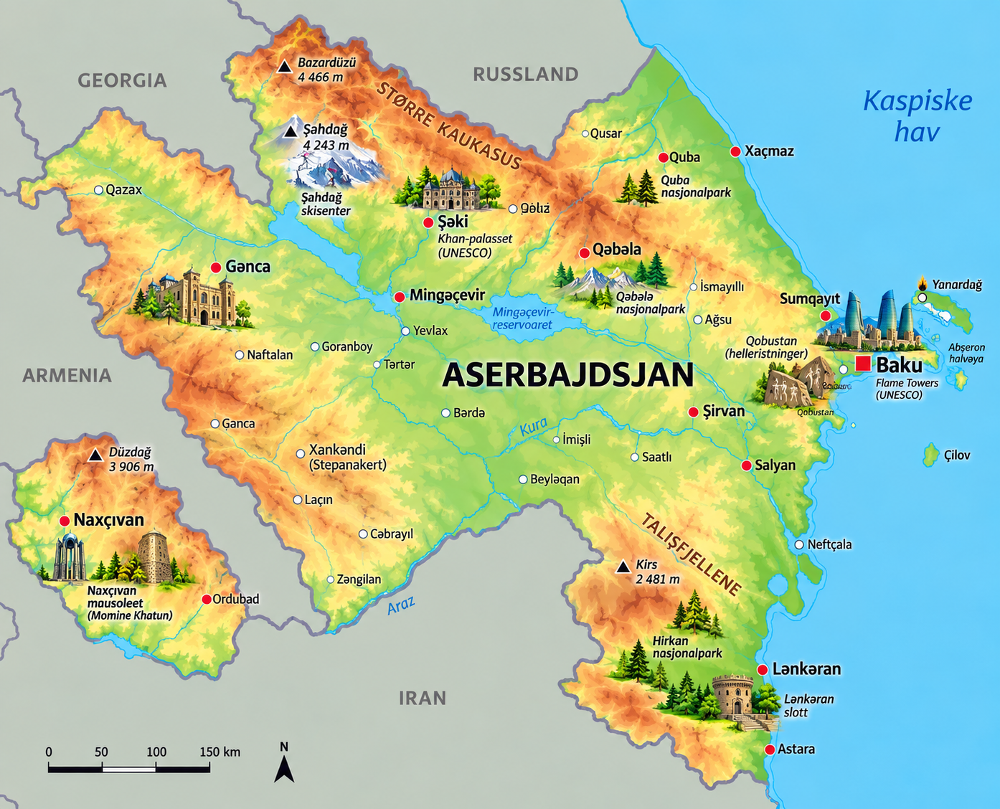
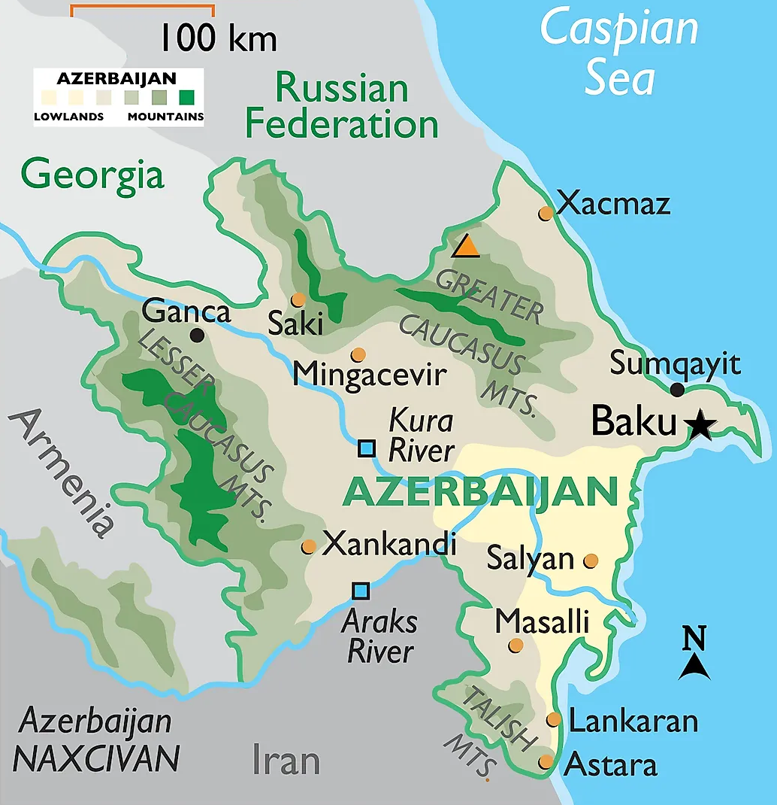

⚡ Korte fakta om Aserbajdsjan
🗺️ Kart over Aserbajdsjan
Klikk på et av kartene for å åpne og zoome i fullskjerm!


1. Natur og klima
Aserbajdsjan ligger i Kaukasus ved Kaspihavet og kalles ofte «Ildens land». Landet har alt fra snødekte fjell til tørre gassfenomener!
Bazardüzü i Kaukasusfjellene er landets høyeste fjell på hele 4 466 meter over havet!
Landet grenser til Kaspihavet, som faktisk er verdens største innsjø!
Aserbajdsjan har over halvparten av alle slamvulkaner i hele verden!
Dyreliv: I fjellene og nasjonalparkene bor den sjeldne kaukasiske leoparden, brunbjørner, ulver og den berømte karabakh-hesten!
2. Folk og samfunn
I Aserbajdsjan bor det ca. 10,1 millioner mennesker. Befolkningen er kjent for sin gjestfrihet og sin kjærlighet for te!
🏢 Største byer i Aserbajdsjan
- 🔹 Baku: Hovedstaden med både en eldgammel festning og hypermoderne skyskrapere!
- 🔹 Ganja: Den nest største byen, rik på historie og kultur.
- 🔹 Andre store byer: Sumqayit, Mingachevir og Lankaran.
☕ Tekultur & Gjestfrihet
Å drikke te (chay) fra pæreformede glass er en veldig viktig tradisjon. Gjestene blir alltid budt på te og søtsaker!
Landet møtes der Europa og Asia møtes, noe som gjør at maten og kulturen er en spennende miks av øst og vest.
🗣️ Språk og minoriteter
Offisielt språk er aserbajdsjansk (et tyrkisk språk). Mange innbyggere forstår og snakker også russisk og engelsk.
3. Stat og politikk
Aserbajdsjan er en republikk der presidenten har mye makt og styrer landet som statsoverhode.
Laster...
Aserbajdsjans president og statsoverhode.
Laster...
Statsministeren i regjeringen.
Milli Majlis
Det aserbajdsjanske parlamentet i Baku.
📍 Aserbajdsjan er delt inn i 66 distrikter samt den autonome republikken Nakhitsjevan.
4. Aserbajdsjans historie
🐪 Silkeveien (Oldtiden og Middelalderen)
Aserbajdsjan var et viktig knutepunkt på den berømte Silkeveien der kjøpmenn reiste mellom Kina og Europa.
🛢️ Verdens første oljeboring (1846)
Verdens første moderne oljebrønn ble boret utenfor Baku. Landet ble raskt en av verdens største oljeprodusenter.
 Første republikk (1918)
Første republikk (1918)
Aserbajdsjan erklærte seg uavhengig i 1918 som den første demokratiske og sekulære republikken i den muslimske verden.
☭ Del av Sovjetunionen (1920–1991)
Landet ble innlemmet i Sovjetunionen og leverte mesteparten av oljen under 2. verdenskrig.
🏙️ Modernisering i dag (1991–nåtid)
Siden uavhengigheten i 1991 har Baku forvandlet seg med futuristiske bygninger som Flame Towers!
5. Økonomi og næringsliv
Hva lever de av i Aserbajdsjan? Landets største riksområde er energi fra under bakken!
Olje og gass
Står for nesten hele landets eksportinntekter.
Jordbruk
Dyrker hvete, bomull, te, sitrusfrukter og granatepler.
Teppeveving
Berømt for håndlagde tepper med utrolige mønstre.
Turisme
Mange besøker Baku og de spektakulære fjellene.
6. Kultur og underholdning
🏫 Skole og sport
Barn i Aserbajdsjan begynner på skolen når de er 6 år. Utdanning er obligatorisk i 9 år.
🤼 Aserbajdsjans mest populære sporter:
Bryting, sjakk, fotball og Formel 1 (Baku Street Circuit)!
🌟 Kjente profiler og kultur
- 🎵 Mugham: Tradisjonell folkemusikk som står på UNESCOs kulturarvliste.
- ♟️ Garry Kasparov: Verdensberømt sjakkmester oppvokst i Baku.
- ✍️ Nizami Ganjavi: En av historiens største poeter.
- 🏎️ Formel 1 i Baku: Ett av sesongens mest krevende gateløp arrangeres her!
🧠 Test deg selv: Aserbajdsjan-Quiz!
Spørsmål laster...